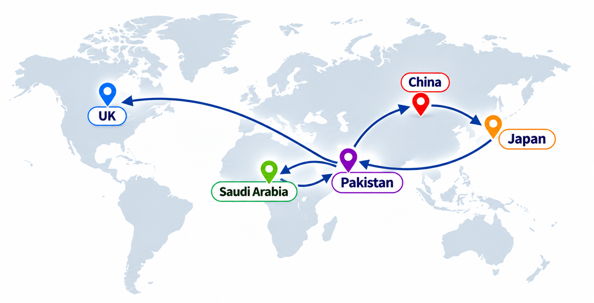
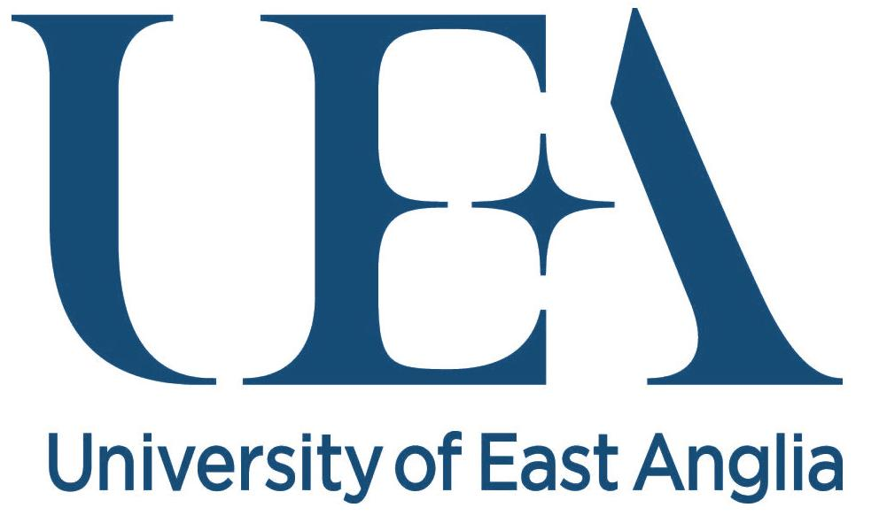
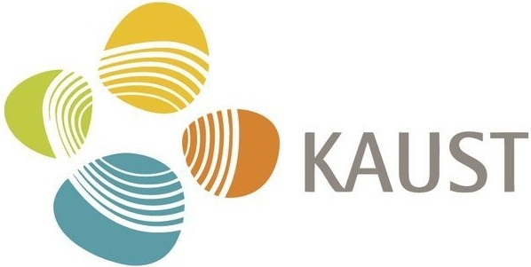
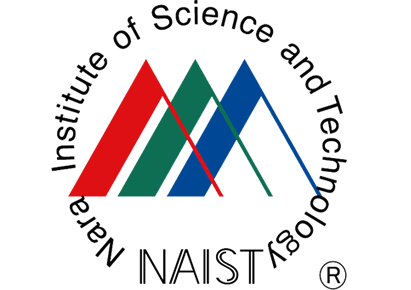
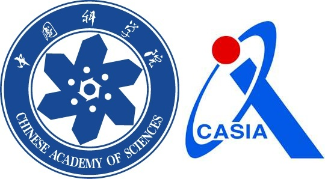

Senior Research Associate
University of East Anglia (UEA) , UK
October 2026 – Present
Research on Multimodal AI, 3D Graphics, Generative AI, and Visual Computing. Working with Dr. Cheng Wang .


University of East Anglia (UEA) , UK
October 2026 – Present
Research on Multimodal AI, 3D Graphics, Generative AI, and Visual Computing. Working with Dr. Cheng Wang .
University of Haripur , Pakistan
October 2025 – September 2026
Teaching, research, and student supervision in computing and related fields.

KAUST , Saudi Arabia
April 2022 – September 2025
Research in visual computing, geometry processing, visualization, and AI-enhanced XR with Prof. Ivan Viola .
University of Haripur , Pakistan
September 2020 – April 2022
Teaching, research, and supervision in computer science and information technology.

NAIST , Japan
December 2018 – August 2020
Research in interactive media design, computer graphics, and XR with Prof. Hirokazu Kato (inventor of ARToolKit).

University of Chinese Academy of Sciences (UCAS) , China
2018
Research conducted at NLPR , CASIA , under the supervision of Prof. Xiaopeng Zhang and Prof. Dong-Ming Yan .